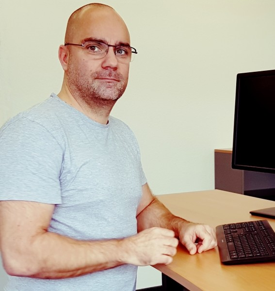

Mirha Masala's Leap of Code
1 Year
Web Development
Writing
I have a Masters in European Studies, but didn't do much with these credentials.
Read More

Justin's Machine Learning Sabbatical
6 Months
Machine Learning
Finance
I began my career by working in the Navy and the Foreign Service between the US, China, and Colombia...
Read More

Rafael Knuth's Data Science Journey
In 1992, I entered the job market and landed a job as an advertising copywriter for McDonald’s.
Read More